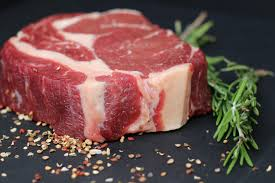
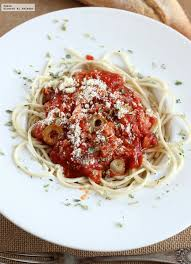

Tipos de comida
¿Cuales son los tipos de comida?
Los distintos tipos de comida pueden ser:
Carne, verdura o pasta
Carne:
La carne es el tejido animal, principalmente muscular, que se consume como alimento. Se trata de una
calificación coloquial y comercial que solo se aplica a animales terrestres, normalmente vertebrados

La importancia de la carne roja en la nutrición. La carne roja es rica en proteínas de buena calidad y, sobre
todo, es una excelente fuente de hierro que contribuye a prevenir o controlar estados de anemia, aseguran los
especialistas en nutrición. También aporta potasio, fósforo, zinc y vitaminas del complejo B
¿Qué nos aporta: La carne contiene alanina, encargada de producir azúcar a partir de la proteína y también puede
proporcionar energía para los músculos para apoyar las actividades normales del cuerpo humano. La carne también
contiene vitamina B12. Esta desempeña un papel importante en la producción de células rojas de la sangre.
verdura:
Las verduras son hortalizas cuyo color predominante es el verde. Sin embargo, el uso popular suele extender
su significado a otras partes comestibles de las plantas, como hojas, inflorescencias y tallos.

¿Qué verduras tienen más vitaminas? Hay una gran variedad de verduras y cada una de ellas tiene una
determinada composición y unos beneficios concretos, de modo que desde Bonduelle os recomendamos el consumo
de aquellas que más nutrientes, propiedades y vitaminas contienen: la cebolla, el brócoli, el repollo, los
espárragos, las espinacas, las judías ...
Pasta:
La pasta es un conjunto de alimentos preparados con una masa cuyo ingrediente básico es la harina, mezclada
con agua, y a la cual se puede añadir sal, huevo u otros ingredientes, conformando un producto que
generalmente se cuece en agua hirviendo.

¿Qué nos aporta la pasta? No podemos olvidar que en una porción generosa de pasta de 100 gramos también encontramos unos 5 gramos de fibra,
y micronutrientes importantes para el organismo,
entre los que destacan minerales como el calcio, magnesio, potasio, fósforo y selenio; y vitaminas del complejo B.
Sus vitaminas:La fibra de los fideos es uno de los mejores laxantes naturales.
los fideos de trigo duro contienen las vitaminas del grupo B, además de vitamina E. Las vitaminas B son esenciales para el metabolismo de hidratos de carbono y grasas,
mientras que la vitamina E mantiene joven el corazón, arterias y venas.